Pengenalan Flowchart
Flowchart berasal dari kata flow, yang berarti alir dan chart, berarti bagan atau diagram. Flowchart berarti bagan alur yang menggambarkan sebuah
langkah-langkah, urutan, atau alir dalam menyelesaikan suatu masalah. Flowchart biasanya disajikan dalam bentuk simbol-simbol grafis yang dimana ....setiap simbolnya ditunjuknya dengan panah.
Fungsi dari flowchart adalah memberi gambaran dari alir jalannya sebuah program yang disajikan dengan simbol-simbol grafis yang memudahkan segala kalangan memahami flowchart.
Contoh dari penggunaan flowchart dapat dilihat pada gambar dibawah.
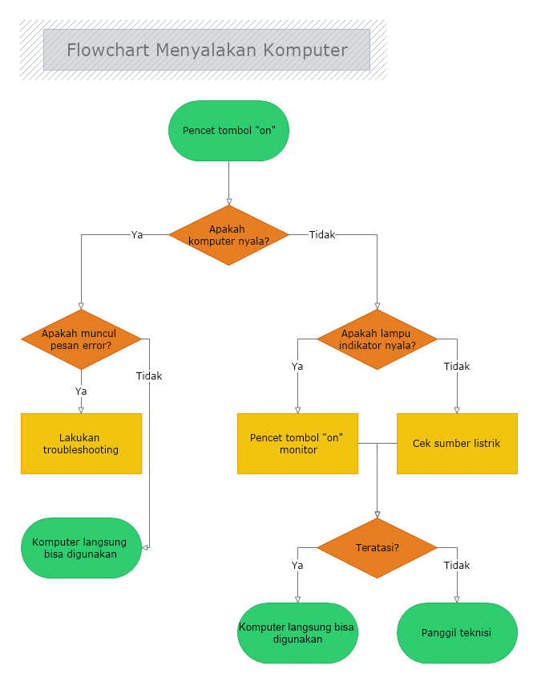
Simbol dalam Flowchart
Simbol dalam flowchart melambangkan aksi atau proses yang akan dilakukan. Terdapat berbagai macam simbol untuk flowchart, namun pada pratikum ini kita
menggunakan RAPTOR Flowchart Interpreter. Berikut simbol flowchart yang ada didalam raptor, dapat dilihat pada tabel dibawah ini.
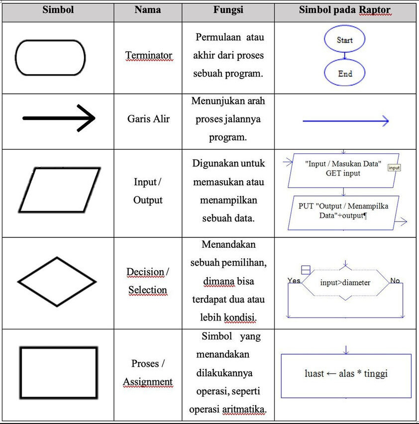
"There are years that ask questions and years that answer."
~ Zora Neale Hurston Their Eyes ~
Rangkuman Modul
Pengenalan Flowchart 2
Pada Flowchart 2 kita akan membahas mengenai perulangan. Tentu kita semua tahu apa itu perulangan, perulangan merupakan suatu proses dimana kita dapat mengulang satu atau
beberapa perintah atau eksekusi blok kode tanpa henti, selama kondisi yang dijadikan acuan terpenuhi. Konsep perulangan ini
....dapat banyak kita jumpai dalam kehidupan kita sehari-hari. Kita ambil satu contoh seperti ketika kita berlari menuju garis finish. Kita akan terus melakukan gerakan
mengulang yaitu berlari dan akan berhenti apabila kita mencapai garis finish. Dengan begitu kita dapat menyimpulkan dalam konsep perulangan adalah kita akan terus melakukan gerakan berulang
(berlari) dan akan berhenti apabila kondisi yang dijadikan acuan (melewati garis finish) telah
terpenuhi.
Perulangan Dalam Flowchart
1. Simbol
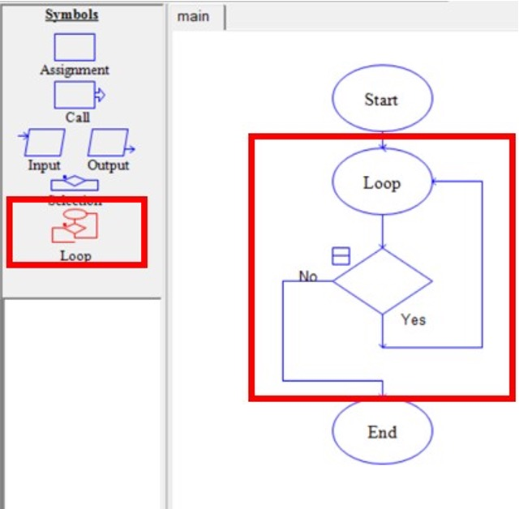
Pada gambar di atas, merupakan simbol dan bentuk dari perulangan yang bersifat default (belum diisi dengan kondisi atau aksi).
Dari gambar di atas, dapat kita ambil kesimpulan secara singkat bahwa apabila perbandingan kondisi sekarang belum mencapai kondisi pemberhenti, maka akan terus menuju ke alur “yes” dan akan menuju “no” apabila kondisi yang dijadikan pemberhenti telah tercapai.
Untuk lebih detailnya, akan dibahas pada bagian di bawah.
2. Komponen
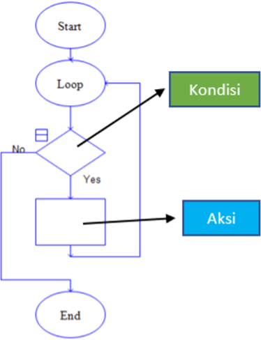
A. Kondisi
Pada bagian kondisi, akan dilakukan pengecekan apakah hasil dari pengecekan bernilai true/Yes atau false/No. Apabila hasil bernilai true/Yes,
maka perulangan akan terus dilakukan. Dan apabila hasil bernilai false/No, maka perulangan pun akan berhenti.
B. Aksi
Aksi merupakan proses/kegiatan yang akan terus dijalankan selama kondisi perulangan bernilai true/Yes. Dengan kata lain, aksi akan dilakukan apabila program berhasil memasuki perulangan.
Aksi dapat diletakkan sebelum atau sesuah pengondisian yang akan dijelaskan lebih detail pada jenis perulangan.
3. Struktur
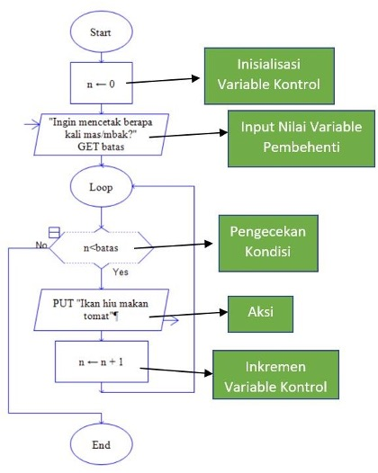
Varible Kontrol:
Merupakan variabel yang mengontrol jalannya perulangan, dimana setiap putaran perulangan variabel kontrol akan melakukan pengecekan kondisi apakah
perulangan bernilai true/false. Variable kontrol memiliki value awal sebagai
mulainya sebuah perulangan. Dengan begitu, kita perlu melakukan inisialisasi
pada variable kontrol untuk memulai suatu perulangan.
Inisialisasi
Inisialisasi adalah penetapan nilai awal dari suatu varibael, seperti pada contoh disamping nilai awalnya adalah "Ikan hiu makan tomat".
Input Nilai Variable Pemberhenti:
Meminta inputan nilai dari variable pemberhenti yang berarti perulangan akan dilakukan sebanyak nilai dari variable pemberhenti yang telah diinputkan.
Pengecekan Kondisi:
Pengecekan kondisi dalam kasus ini yaitu mengecek apakah variable kontrol (n) masih kurang dari variable
pemberhenti (batas). Apabila hasil pengecekan kondisi bernilai true/Yes, maka akan melakukan aksi serta inkremen variable kontrol. Dan apabila bernilai false/No, maka program akan berhenti.
Inkremen/Dekremen Variable Kontrol:
Penambahan/pengurangan jumlah variable kontrol sesuai dengan yang ditentukan dalam setiap perulangan. Contoh akan diambil berdasarkan flowchart di atas.
Jika melakukan inkremen, maka akan dilakukan penambahan variable kontrol (n = n+1) dan apabila melakukan dekremen, maka akan dilakukan pengurangan variable kontrol (n = n-1).
Perlu diingat, nilai dari operasi tidak selalu +1 atau -1, melainkan akan menyesuaikan dengan kebutuhan dalam menjalankan program.
4. Jenis Perulangan
A. Perulangan Do-While (Aksi - Kondisi) / Post-test
Perulangan ini merupakan jenis perulangan dimana proses/aksi akan dijalankan terlebih dahulu dan setelah itu akan dilakukan proses pengecekan kondisi, apakah bernilai true/false.
Jika bernilai true/Yes, maka akan masuk kembali ke perulangan hingga kondisi mencapai false/No.
Dikerjakan terlebih dahulu, kemudian pengecekan kondisi.
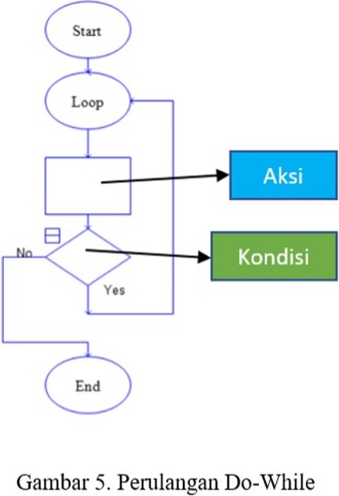
B. Perulangan While-Do (Kondisi - Aksi) / Pre-test
Perulangan ini merupakan jenis perulangan dimana
pengecekan kondisi akan dijalankan terlebih dahulu dan
setelah itu akan dilakukan proses/aksi. Kondisi akan dicek
terlebih dahulu apakah bernilai true/Yes atau false/No.
Apabila kondisi bernilai true/Yes, maka akan masuk ke
dalam perulangan dan melakukan aksi. Apabila tidak
memenuhi kondisi atau bernilai false/No, maka perulangan
tidak akan dilakukan.
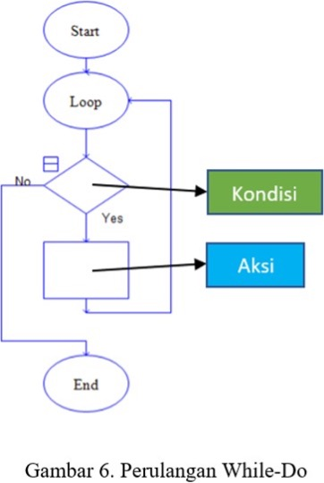
C. Perulangan For
Merupakan jenis perulangan dimana kita sudah mengetahui berapa kali jumlah perulangan
yang akan dilakukan. Perulangan for wajib menggunakan variabel kontrol serta
menginisialisasi variabel kontrol tersebut. Setelah itu kita juga perlu menentukan apakah kita
akan menggunakan inkremen/dekremen dan jangan lupa memberi pengondisian yang
menentukan kapan perulangan akan berakhir.
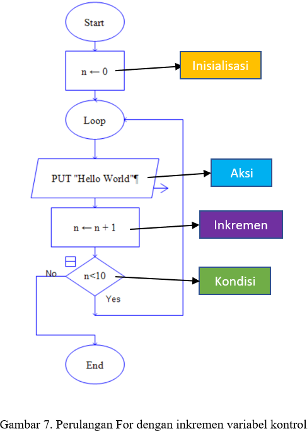
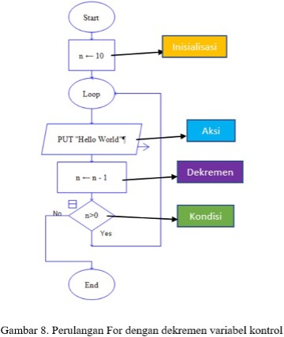
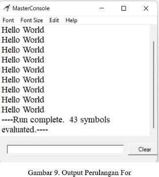
"If I cannot do great things, I can do small things in a great way."
~ Martin Luther King, Jr. ~
Pengenalan Tipe Data
Tipe data adalah suatu pengklasifikasian data berdasarkan jenis - jenis data yang tersedia
di dunia nyata dan dapat diaplikasikan ke dalam sebuah wadah bernama Variabel. Tipe data
digunakan untuk compiler dapat menentukan bagaimana data tersebut akan digunakan. Dalam
penggunaan tipe data dapat
.... terbagi menjadi dua bagian, yaitu Tipe Data Primitif dan Tipe Data Bentukan.
Tipe Data Primitif
Tipe data ini adalah tipe data dasar yang disediakan bahasa pemrograman yang digunakan
dan paling umum digunakan. Berikut tipe data primitif yang tersedia di bahasa pemrograman C :
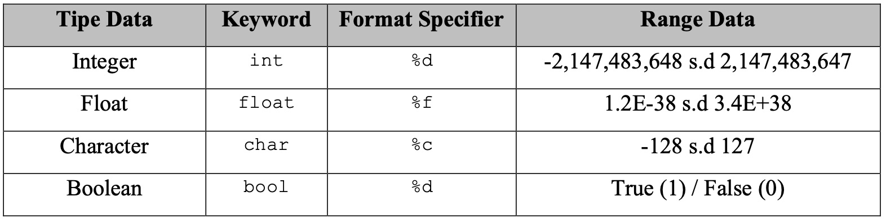
1. Integer
Merupakan tipe data yang melambangkan bilangan bulat dalam bahasa C, memakan memory sebanyak 4 bytes per variabel yang menggunakan tipe data ini. Contoh : 1, -1, 123, 0, -124
Terdapat juga tipe data integer yang dapat menyimpan lebih banyak maupun lebih sedikit
dari integer, yaitu :
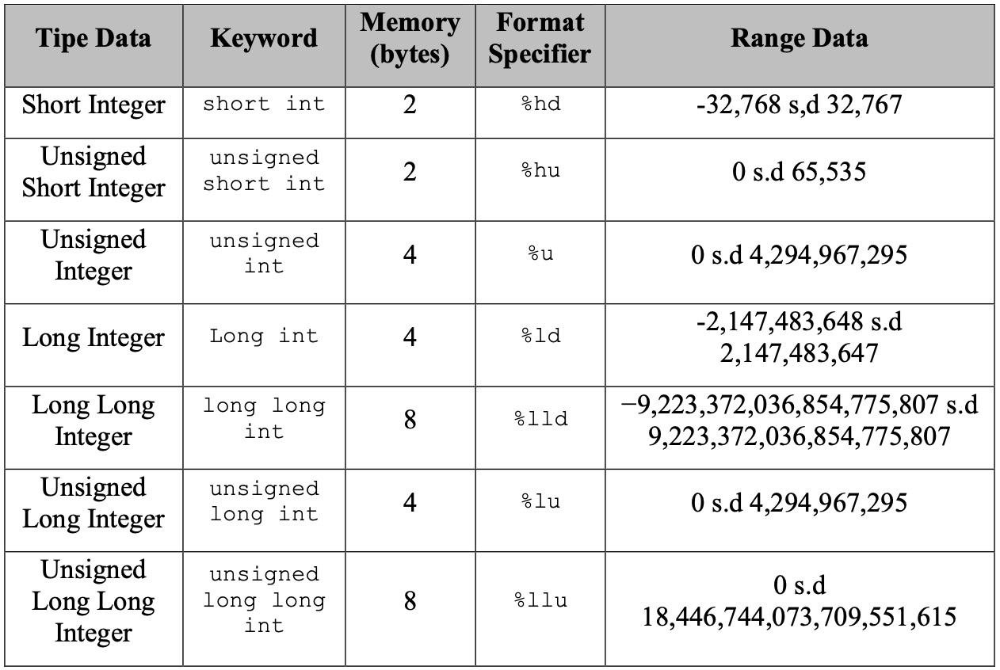
2. Float
Merupakan tipe data yang melambangkan bilangan real pada bahasa C, memakan memory sebanyak 4 bytes per variabel yang menggunakan tipe data ini. Contoh : 1.0, -1.687, 200.35, -1001.102
Terdapat juga tipe data integer yang dapat menyimpan lebih maupun lebih kecil dari integer,
yaitu :
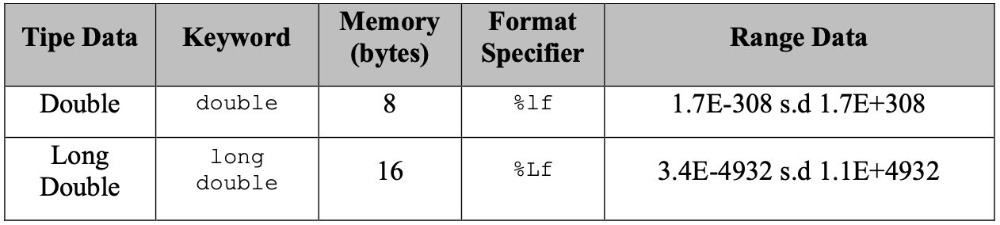
3. Character
Merupakan tipe data yang melambangkan suatu character atau alfabet di bahasa C, memakan memory sebanyak 1 bytes per variabel yang menggunakan tipe data ini. Contoh : ‘A’, ‘1’, ‘K’, ‘%’, ‘[‘
Char menggunakan sistem yang bernama kode ASCII untuk menampilkan character yang ditampilkan saat aplikasi berjalan.
Terdapat juga tipe data integer yang dapat menyimpan lebih maupun lebih kecil dari integer,
yaitu :
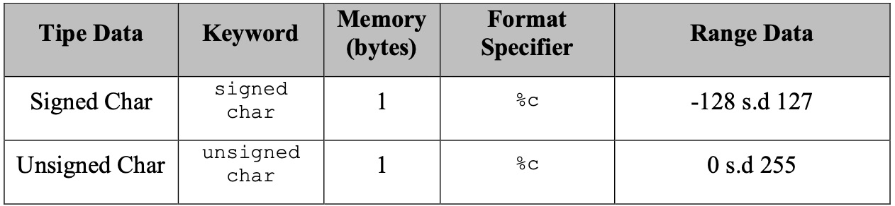
4. Boolean
Merupakan tipe data tambahan dari library stdbool.h perlu menginclude library tersebut untuk menggunakan boolean, namun dapat digantikan dengan 1 dan 0 bila tidak mau menggunakan boolean ini, karena pada dasarnya boolean true dan false adalah 1 dan 0.
Tipe Data Bentukan
Merupakan tipe data yang dibentuk oleh programmer sendiri untuk memenuhi suatu
kebutuhan. Tipe data ini merupakan turunan dari tipe data primitif atau tipe data bentukan lainnya.
Tipe data baru ini dapat dibuat dengan keyword typedef atau menambahkan record yang dapat
dibuat dengan keyword struct.
Variabel
Merupakan suatu wadah untuk menampung data yang ditentukan oleh tipe data, variabel
ini perlu yang namanya Deklarasi Variabel, yaitu proses memperkenalkan / pembuatan.
Pendeklarasian variabel dapat dilakukan dengan mengetikan tipe data terlebih dahulu lalu nama
variabel yang diinginkan. Contoh :
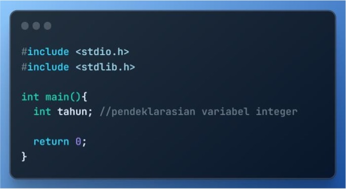
Untuk pengaksesan suatu tipe data bentukan masih sama sesuai dengan tipe data primitif yang dipakai saat membuat suatu tipe data bentukan baru tersebut, namun khusus string menggunakan format specifier “ %s ” untuk menampilkan kalimat yang sudah di simpan pada string tersebut.
Setelah deklarasi variabel kita dapat melakukan inisialisasi, assignment, operasi pada variabel tersebut dan menampilkani isi variabel. Contoh :
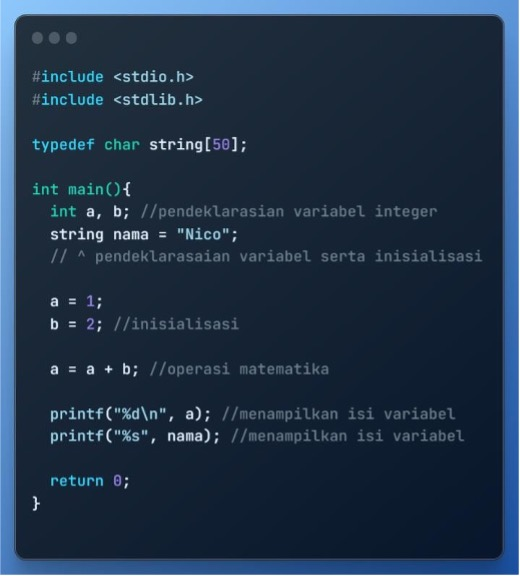
Variabel juga dapat diinputkan oleh user pengguna program dengan menggunakan fungsi scanf atau gets, fungsi scanf ini berguna untuk meminta inputan ke pengguna yang akan dibaca melalui terminal dan akan menyimpan ke suatu variabel yang mau dituju. Contoh :
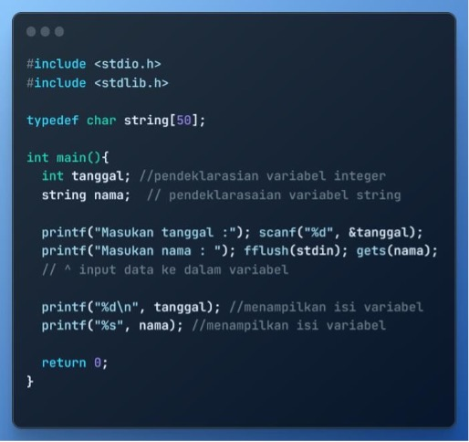
Penamaan
Seperti arti dari kata tersebut, memberi nama. Pada pemrograman digunakan pada berbagai objek yang tersedia dalam program. Nama tersebut hanya dapat diberikan pada Variabel, Konstanta, Tipe Data Bentukan, Prosedur, Fungsi.
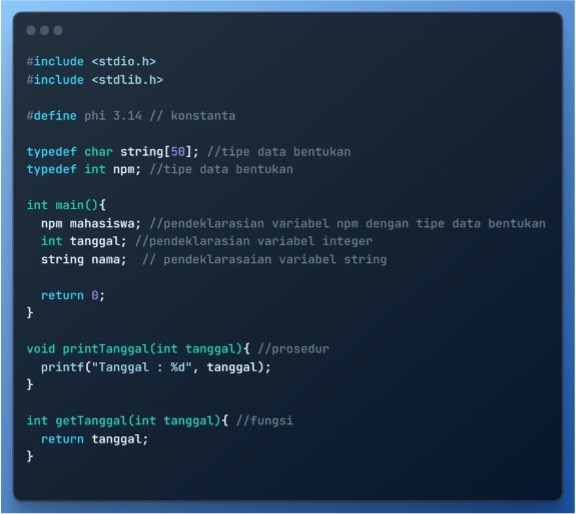
Aturan Penulisan Nama pada C :
1. Case sensitive (dibedakan berdasarkan uppercase dan lowercase)
2. Karakter pertama variabel harus dimulai dengan huruf abjad (a - z) atau underscore (_),
3. Karakter yang diperbolehkan dalam sebuah nama adalah huruf abjad, underscore, dan angka,
4. Nama tidak boleh dipisahkan dengan spasi,
5. Beberapa compiler C membatasi panjang variable maksimal 31 karakter, sehingga sebaiknya tidak menulis nama variable lebih dari 31 karakter.
6. Nama variable harus selain dari keyword (int, float, main, dll)
Selain aturan penulisan diatas, hal lain juga perlu diperhatikan adalah kejelasan dan makna suatu nama variabel yang dinamai. Contoh nilaiDasarPemrograman lebih mudah dipahami oleh orang lain dibandingkan dengan nDP.
Contoh penamaan yang salah :
1. return
2. 10Siswi
3. Nilai Dasar Pemrograman
4. Ekonomi;Geofisika
5. B
Contoh penamaan yang benar :
1. siswi_10
2. nilaiDasarPemrograman
3. ekonomiGeofisika
4. password_siswa
5. luas_lingkaran
Assignment, Inisialisasi, Ekspresi Aritmatika dan Ekspresi Relasional
Seperti yang sudah disinggung dalam penjelasan variabel, assignment adalah suatu proses pemberian nilai terhadap suatu variabel. Jika suatu variabel dideklarasikan dan dilakukan proses assignment maka disebut dengan
inisialisasi. Nilai yang dimasukan kedalam variabel dapat digunakan untuk perhitungan ekpresi aritmatika yang menghasilkan nilai numerik,
maupun ekspresi relasional yang menghasilkan nilai logika.
Contoh assignment :
1. nilai = 100;
2. nilaiHuruf = ‘A’;
3. nama = “Budi”;
4. rata2 = nilai;
5. npm = 210711227;
Contoh ekpresi artimatika serta assignment:
1. a = a + b;
2. jari2 = 3.14 * r * r;
3. tanggal5 = getTanggal(tanggal) * 5;
Contoh ekpresi logika :
1. npm == 210711227; (Jika npm sama, maka true (1), selain itu akan false (0) ),
2. tahun < 2023; (Jika tahun dibawah 2023 maka true (1), jika sama atau diatas 2023 akan false (0) ),
3. angka % 2 == 0; (Jika angka habis dibagi 2 maka true (1), jika tidak maka false (0) ).
Sekuens
Algoritma adalah sekumpulan instruksi yang dijalankan secara berurutan (sekuensial).
Secara umum aturan sekuens algoritma adalah sebagai berikut :
1. Tiap instruksi dilaksanakan satu persatu dan biasanya tiap instruksi dibaca dari atas ke
bawah dan dari kiri ke kanan,
2. Tiap instruksi dilaksanakan satu kali,
3. Urutan instruksi yang dilaksanakan pemroses sama dengan urutan aksi sebagaimana
tertulis didalam algoritma yang ada, dan
4. Akhir dari instruksi terakhir merupakan akhir algoritma.
Contoh sekuens :
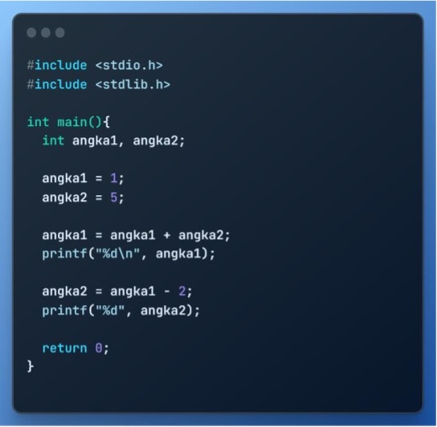
Nilai angka1 akan menjadi 6 di saat terjadi operasi aritmatika, dan menampilkan 6, lalu angka2
akan bernilai 4 dikarenakan operasi tersebut terjadi setelah operasi penambahan pertama terjadi,
dan akan menampilkan 4 untuk angka2.
“You don't learn to walk by following rules. You learn by doing, and by falling over.”
~ Richard Branson ~
Pengenalan Pemilihan
Pemilihan atau percabangan merupakan sebuah algoritma kondisi yang mana terdapat
persyaratan tertentu yang akan dieksekusi dan memenuhi suatu kondisi, pada umumnya
saat membuat program yang lebih kompleks akan sering menjumpai suatu permasalahan
yang hanya dapat diselesaikan dengan .... menggunakan pemilihan/percabangan. Pemilihan sendiri memiliki dua nilai yaitu true dan false, suatu aksi hanya akan dilakukan
jika nilai dari kondisinya bernilai true. Kedua nilai ini juga mempengaruhi bagaimana
nantinya program yang dibuat akan bekerja.
Operator Boolean
Operator Boolean biasanya digunakan untuk membandingkan suatu kondisi/persyaratan
didalam pengkodisian, hasil dari operator Boolean bernilai true atau false. Bentuk
penggunaan dari operator Boolean : Kondisi 1
A. IF-ELSE
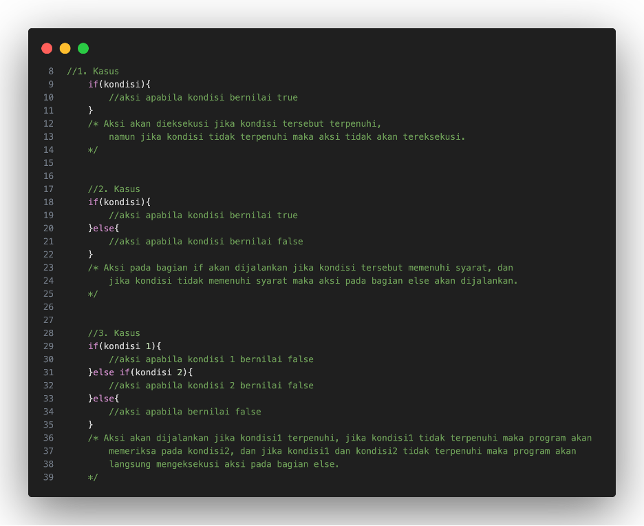
B. SWITCH
Jenis pemilihan kedua yaitu switch case yang biasanya digunakan untuk kasus pemilihan yang lebih banyak, dan juga agar baris kode yang dibuat lebih sederhana dan rapi.
Switch case ini sering juga digunakan untuk membuat menu-menu pada program yang menggunakan inputan integer maupun character.
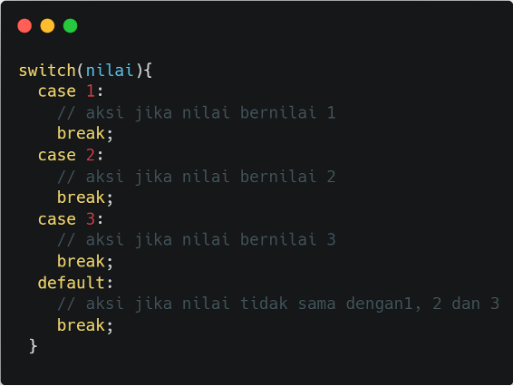
Pada switch, kondisi dari sebuah percabangan terletak setelah ‘case’, pada contoh diatas aksi akan diajalankan jika nilai dari sebuah variable menunjukkan angka 1 atau 2 dan jika kedua nilai itu tidak terpenuhi maka aksi default akan dijalankan, default berarti else. Break pada pemilihan switch berfungsi untuk memaksa program keluar dari suatu kondisi pada pemilihan agar aksi pada kondisi selanjutnya tidak tereksekusi.
C. Operator Ternary
perator ternary (atau conditional operator) adalah operator yang digunakan untuk membuat keputusan dalam satu baris kode. Operator ini memiliki tiga operand, dan digunakan untuk melakukan evaluasi suatu kondisi, kemudian menghasilkan nilai berdasarkan kondisi tersebut.
Jika kondisi bernilai true, maka nilai1 akan dihasilkan, sedangkan jika kondisi bernilai nilai2 akan dihasilkan. Contoh:
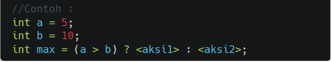
D. String
Pada Bahasa pemograman C tipe data string merupakan tipe data bentukan, dimana dibentuk dari tipe data char dengan mendeklarasikan typedef char string[
1. STRCPY
Fungsi strcpy merupakan string copy, yang berfungsi untuk menyalin sebuah string kedalam suatu variabel diruas kirinya. Seperti contoh di atas menyalin nilai dari variabelB kedalam variabelA dan memasukan string “Pemilihan” kedalam variabelA.
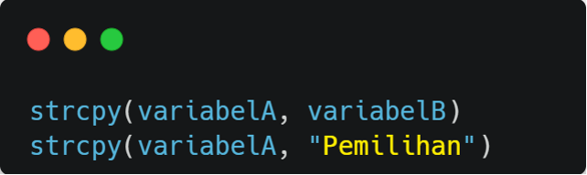
2. STRLEN
Fungsi strcpy merupakan string copy, yang berfungsi untuk menyalin sebuah string kedalam suatu variabel diruas kirinya. Seperti contoh di atas menyalin nilai dari variabelB kedalam variabelA dan memasukan string “Pemilihan” kedalam variabelA.
Fungsi strlen merupakan string length, yang berfungsi untuk mengetahui berapa jumlah karakter yang terdapat dalam sebuah string atau variabel dengan tipe data string. Penggunaan fungsi strlen ini akan jauh lebih efektif jika menempel pada suatu variabel / dijadikan sebagai kondisi pada pemilihan.
3. STRCMP & STRCMPI
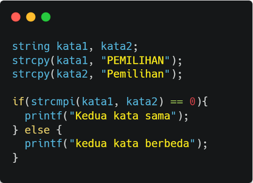
Fungsi strcmp dan strcmpi sama-sama berfungsi untuk membandingkan dua buah string. Strcmpi merupakan string compare insensitive dimana fungsi ini akan menganggap kedua string sama jika semua karakter di variabel kata1 dan kata2 identik, tidak peduli dengan huruf kapital atau tidak. Sedangkan strcmp merupakan
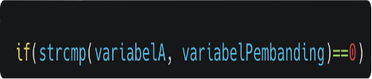
string compare dengan case sensitive, artinya fungsi akan menganggap kedua string sama / true jika semua karakter benar-benar identik termasuk memperhatikan huruf kapitalnya. Kedua fungsi ini sering digunakan sebagai kondisi di perulangan. Seperti contoh diatas akan mengeluarkan output “Kedua kata sama” karena menggunakan case insensitive yaitu strcmpi. Dan jika menggunakan strcmp maka program akan mengeluarkan output kedua kata berbeda.
Akan bernilai True jika variabelA dan variabelPembanding memiliki isi string yang sama.
Akan bernilai True jika variabelA dan variabelPembanding memiliki isi string yang berbeda.
"If I cannot do great things, I can do small things in a great way."
~ Martin Luther King, Jr. ~
Pengenalan Perulangan 1
Perulangan atau umumnya disebut dengan Loop, adalah sebuah teknik yang
memungkinkan program untuk menjalankan serangkaian perintah secara berulang sampai
suatu kondisi tertentu telah berhasil dicapai. Hal ini memungkinkan kita untuk menulis kode
program yang
....lebih efisien dan lebih mudah dibaca.
Contoh:
Saya ingin menampilkan output kata “DasPro” sebanyak 50 kali. Saya bisa saja menulis printf(“DasPro”) sebanyak 50x,
tetapi cara itu tidak efektif dan memakan waktu yang banyak, sehingga untuk mengatasi hal itu kita perlu menggunakan perulangan atau
loop sehingga kita bisa menulis kode seperti dibawah ini.
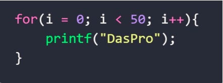
A. Kelompok Perulangan
1. Counted Loop (Perulangan Terhitung) : Perulangan yang sudah pasti dan sudah ditentukan sebelumnya berapa jumlahm perulangan yang akan dijalankan oleh program.
2. Uncounted Loop (Perulangan Tidak Terhitung) : Perulangan yang akan terus berulang sampai kondisi tertentu terpenuhi sehingga tidak
diketahui pasti seberapa banyak perulangan yang akan dijalankan program dari awal.
B. Komponen Perulangan
1. Inisialisasi : Penentuan awal variabel kontrol.
Variabel kontrol adalah variabel yang digunakan sebagai pengatur/pengendali
perulangan dan harus mulai dari suatu nilai tertentu.
2. Kondisi : Kondisi Ekspresi Boolean (Kondisi terhadap variabel kontrol berupa true / false)
Sebagai contoh, loop akan terus berjalan apabila kondisi masih true dan berhenti ketika kondisi bernilai false.
3. Inkremen / Dekremen : Peningkatan / Pengurangan nilai variabel kontrol secara bertahap. Pada setiap perulangan, variabel kontrol akan diinkremen maupun didekremen sesuai kebutuhan.
• Inkremen
Proses penambahan nilai pada variabel kontrol. Nantinya nilai ini akan terus bertambah selama perulangan masih berjalan.
Contoh :
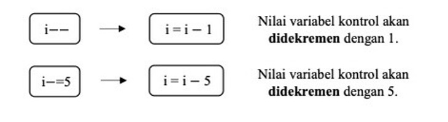
• Dekremen
Proses pengurangan nilai pada variabel kontrol. Maka, nilai dari
variabel kontrol akan berkurang selama perulangan masih berjalan.
Contoh :
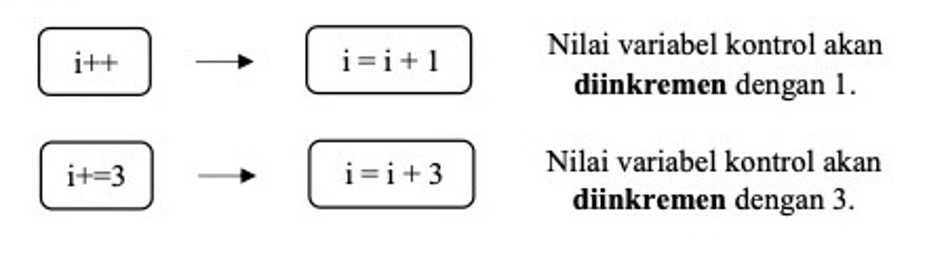
4. Statement : Perintah yang di loop dalam suatu perulangan.
5. Terminasi : Sebuah perintah yang dapat mengakhiri suatu perulangan, atau menyatakan akhir dari suatu perulangan (bersifat opsional).
C. Jenis Perulangan
1. For Loop (Counted Loop)
Perulangan “For” merupakan perulangan yang termasuk dalam counted loop, hal ini karena jumlah perulangan yang akan dijalankan program sudah ditentukan dari awal.
Pertama-tama, inisialisasikan sebuah nilai terlebih dahulu, kemudian dilanjut dengan menulis kondisi perulangan. Lalu, tentukan apakah nilai inisialisasi akan diinkremen atau didekremen.
Langkah terakhir adalah mengisi statement dengan aksi yang akan diulang-ulang oleh program dan diakhiri dengan terminasi (opsional).
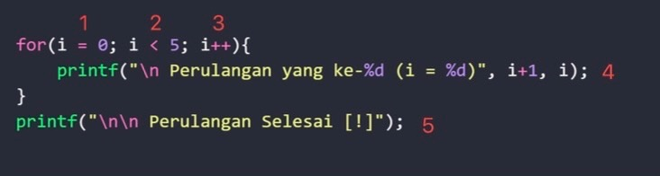
1) [ 1 - 2 – 4 – 3 ] : Cek kondisi 0 < 5 (True), lalu inkremen variabel i.
2) [ 2 – 4 – 3 ] : Cek kondisi 1 < 5 (True), lalu inkremen variabel i.
3) [ 2 – 4 – 3 ] : Cek kondisi 2 < 5 (True), lalu inkremen variabel i.
4) [ 2 – 4 – 3 ] : Cek kondisi 3 < 5 (True), lalu inkremen variabel i.
5) [ 2 – 4 – 3 ] : Cek kondisi 4 < 5 (True), lalu inkremen variabel i.
6) [ 2 – 5 ] : Cek kondisi 5 (False), maka loop berhenti
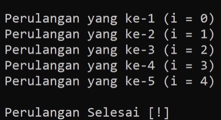
2. While Loop (Uncounted Loop)
Perulangan “While” termasuk ke dalam uncounted loop. Hal ini karena belum diketahui berapa kali program akan menjalankan perulangan. Pada perulangan while,
nilai inisialisasi / variabel kontrol akan dicek terlebih dahulu. Jika variabel control tidak memenuhi kondisi (False), maka program akan langsung keluar dari loop tersebut. Dengan kata lain, selama variabel kontrol memenuhi kondisi (True), perulangan akan terus menerus dijalankan oleh program.
Struktur:
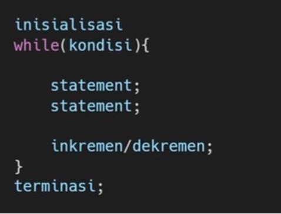
Contoh Code:
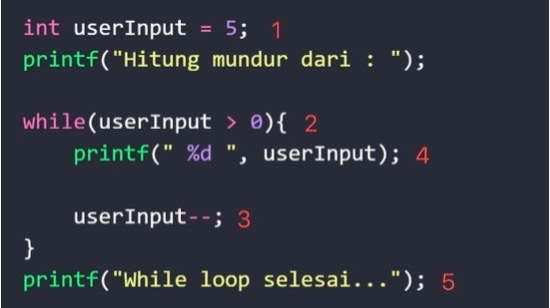
Alur Program:
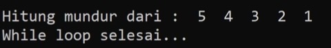
3. Do-While Loop (Uncounted Loop)
Sama halnya dengan perulangan while, perulangan “Do While” juga termasuk dalam uncounted loop untuk alasan yang sama. Jumlah perulangan yang akan dijalankan oleh program sama sekali tidak diketahui dari awal. Perulangan do while akan menjalankan statement terlebih dahulu lalu mengecek kondisi di setiap akhir perulangan. Jika kondisi tidak terpenuhi (False), maka program akan keluar dari loop
tetapi jika kondisi terpenuhi (True) maka program akan terus menjalankan perulangan.Perlu diingat bahwa apapun hasil pengecekan kondisi pada do while loop, program akan tetap menjalankan statement/code minimal 1 kali!
Struktur:
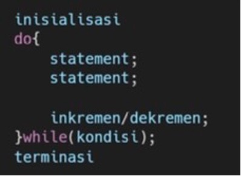
Contoh Code:
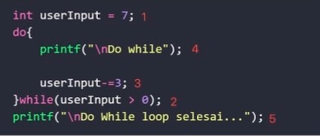
Alur Program:
1) [ 1 – 4 – 3 – 2 ]
: Menjalankan printf, dekremen variabel userInput, lalu cek kondisi 4 > 0 (True).
2) [ 4 – 3 – 2 ]
: Menjalankan printf, dekremen variabel userInput, lalu cek kondisi 1 > 0 (True).
3) [ 4 – 3 – 2 – 5 ]
: Menjalankan printf, dekremen variabel userInput, cek kondisi -2 > 0 (False),
kemudian loop berhenti.
Output program:
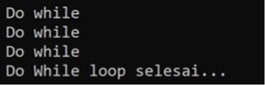
"Be yourself; everyone else is already taken."
~ Oscar Wilde ~
Pengenalan Perulangan 2
Nested Loop merupakan struktur perulangan yang berada di dalam perulangan lainnya (loop di dalam loop).
Perulangan dalam (inner loop) dan perulangan luar (outer loop) dapat berupa jenis apa pun, seperti while loop maupun for loop.
Berikut merupakan contoh code & hasil run dari Nested Loop sederhana yang
....dapat dilihat pada Gambar 1 dimana digit pertama adalah digit outer loop dan digit kedua adalah digit inner loop.
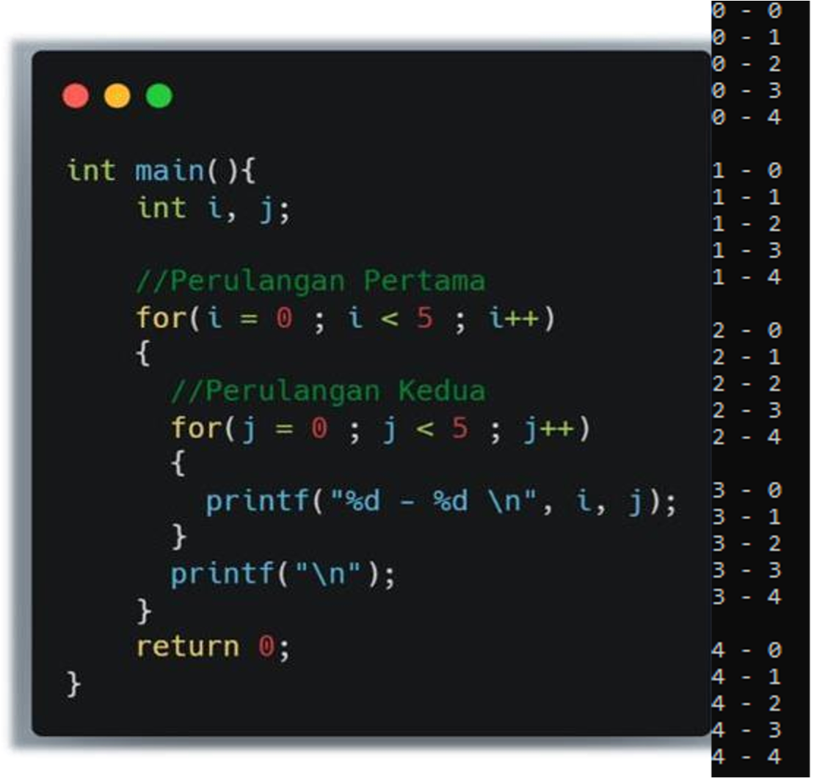
Gambar 1 Struktur Perulangan
A. Break Statement
Pada Nested Loop, break digunakan untuk melakukan penghentian suatu perulangan
pada suatu keadaan tertentu. Penggunaannya dapat dilihat pada contoh pada Gambar 2 dan Gambar 3, Pernyataan break dapat dieliminasi dengan penambahan kondisi,
sehingga loop dapat berhenti dengan sempurna.
1. Contoh Pertama:
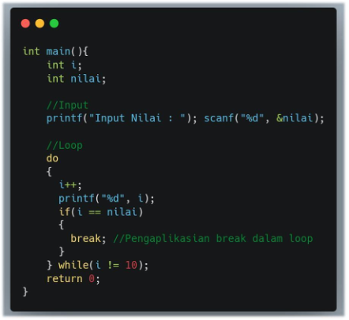
Gambar 2 Penerapan Break Statement
Pada Gambar 2, Jika kita input angka 5, maka program akan melakukan printing
angka 1 hingga angka 5 seperti pada Gambar 3. Program berhenti pada angka 5
karena break statement.
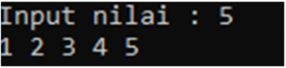
Gambar 3 Output break statement
2. Contoh Kedua:
Code pada Gambar 4 akan meminta user untuk menginputkan angka terus menerus. Program akan berhenti jika user menginputkan secret number yang benar yang sudah dideklarasikan sebelumnya yaitu angka 8.
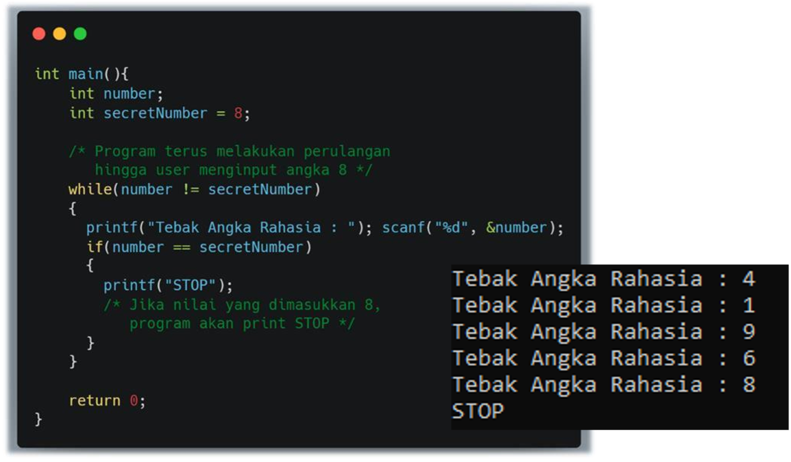
Gambar 4 Pengkodisian
B. Perumpamaan nested loop
Jika Nested Loop diumpamakan dalam bentuk matriks dengan i sebagai baris dan j
sebagai kolom matriks tersebut. Maka akan terbentuk matriks seperti pada Gambar 5.
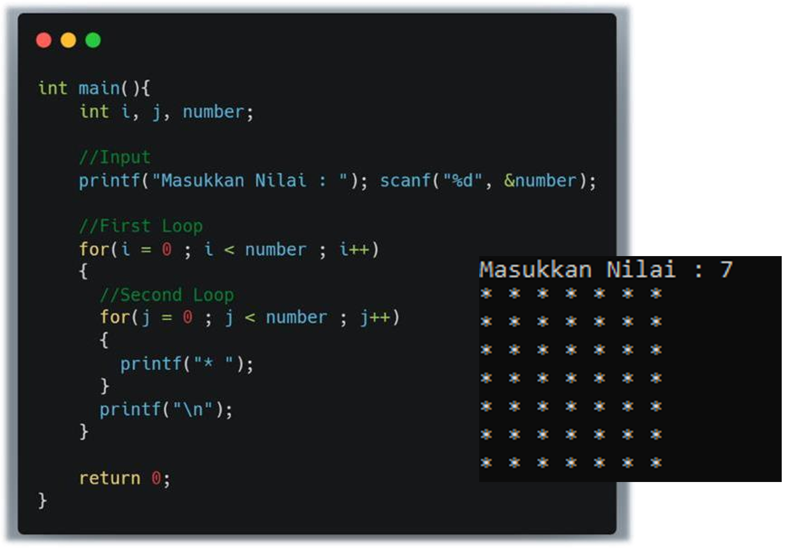
Gambar 5 Perumpaan nested loop
C. Contoh Lain Penerapan Nested Loop
1. Nested Loop dengan output angka sesuai banyaknya baris dan kolom seperti pada Gambar 6.
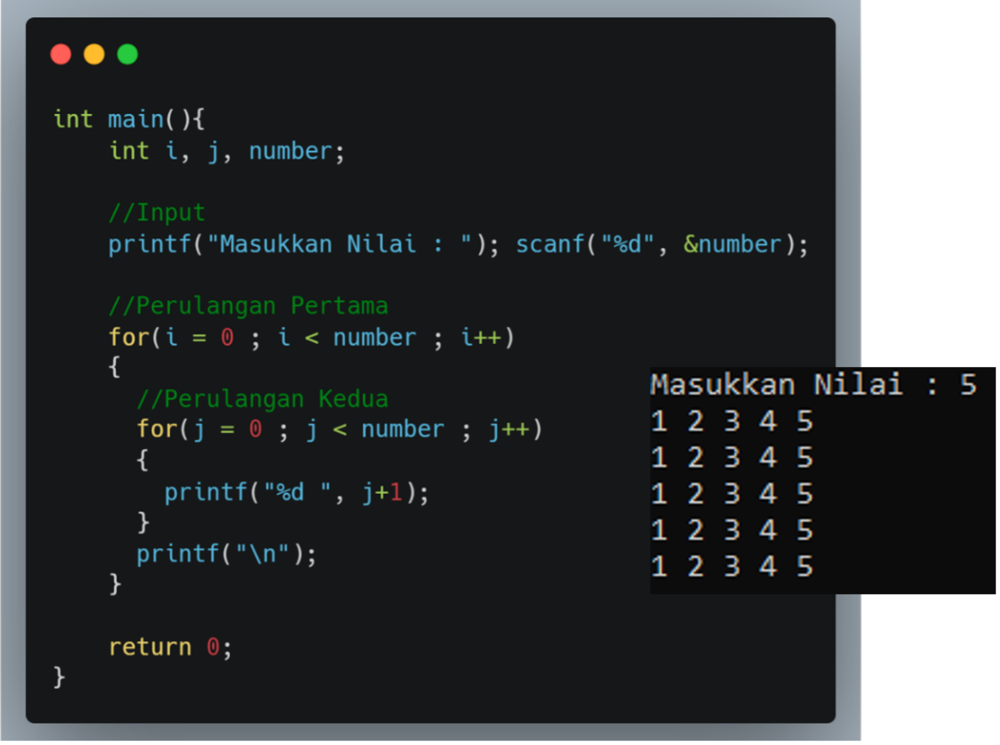
Gambar 6. Contoh perulangan 1
2. Nested Loop dengan output segitiga dengan tinggi sesuai input seperti pada Gambar 7.
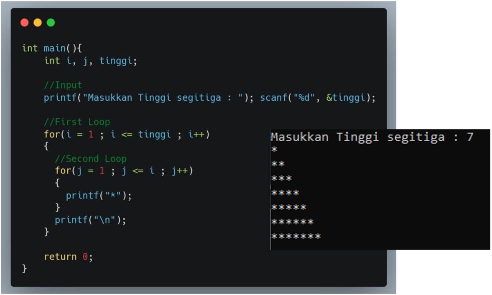
Gambar 7. Contoh perulangan 2
3. Pembuatan Error handling untuk mendapat input yang diinginkan. Misal jika program menginginkan input dari user berupa angka dari 1-9, maka salah satu cara untuk membuat error handling jika inputan tidak sesuai dengan yang diinginkan user adalah seperti Gambar 8.
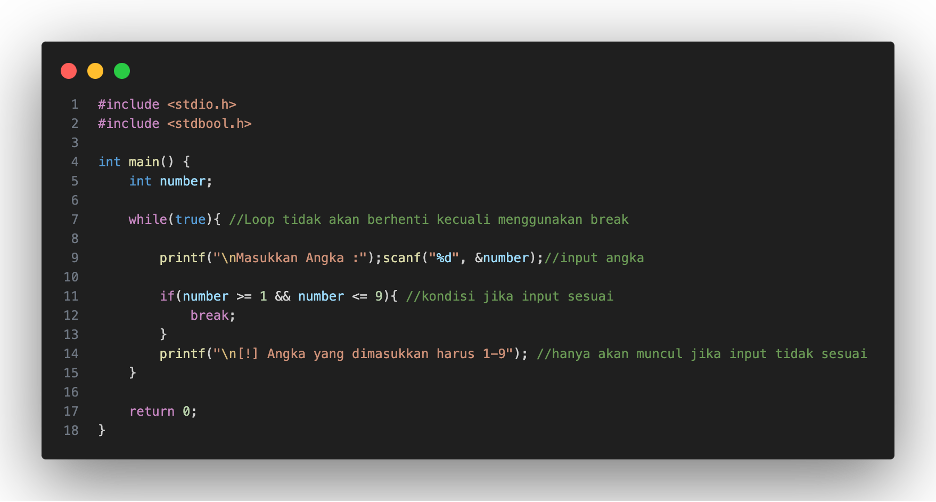
Gambar 8. Contoh error handling sederhana
"Believe you can and you're halfway there."
~ Theodore Roosevelt ~
Pengenalan Prosedur
Prosedur adalah sebuah sub program yang berisi segala alur dan logika untuk menjalankan suatu kode tertentu. Prosedur akan membuat progam bisa membagi tugas-tugasnya sesuai dengan keperluannya dan bisa kita panggil ke main program jika dibutuhkan. Prosedur akan sangat berguna
....
untuk para programmer jika ingin menjalankan suatu kode yang berulang maupun tidak berulang. Kita tidak perlu menulis ulang kode terebut karena kita hanya perlu memanggil prosedur itu saja untuk menjalankan code yang sama.
Bagaimanakah Struktur dari Prosedur?
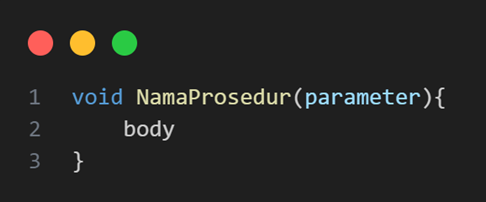
1. Nama Prosedur : Nama untuk mengidentifikasi dan memanggil prosedur.
2. Parameter : Informasi / variabel yang dibutuhkan untuk menjalankan aksi suatu prosedur. Ketika prosedur hendak dieksekusi dan parameternya tidak lengkap, maka program akan mengalami error dan tidak bisa dijalankan. Parameter berfungsi untuk memberikan inputan supaya bisa digunakan di dalam prosedur dan bersifat opsional.
3. Body : Isi dari prosedur berupa alur dan logika dari suatu kode.
Di dalam prosedur sendiri, bentuk parameter dapat berupa :
1. Parameter input : merupakan parameter sebagai masukan atau inputan ke dalam prosedur untuk menjalankan suatu aksi.
2. Parameter output : merupakan parameter di dalam prosedur yang nilainya nanti akan dibawa keluar ke dalam variabel yang ada di main program (memiliki ciri khas, yaitu terdapat pointer / asteris “*” yang menempel pada parameter).
Bagaimana cara kita untuk menggunakan prosedur?
1. Pendeklarasian Prosedur
Pendeklarasian prosedur dapat dilakukan di bagian margin atas pada program (bagian sebelum masuk ke main program). Sebuah prosedur akan tetap berjalan meskipun tidak dideklarasikan. Namun, hal tersebut akan memicu warning conflicting types karena program tidak menemukan body dari prosedur terkait saat dieksekusi.
2. Pendefinisian Prosedur
Pendefinisian prosedur merupakan proses dimana programmer membuat suatu prosedur hingga siap digunakan di main program. Bagian ini akan mendefinisikan prosedur terkait dengan perintah / alur code tertentu sesuai dengan konteks prosedur yang dibuat. Pembuatan pendefinisian prosedur bisa dilakukan di bagian margin bawah pada program (tepat di bawah main program).
3. Pemanggilan Prosedur
Pemanggilan prosedur merupakan proses programmer menggunakan / memanggil prosedur yang telah ia buat baik di main program atau pun di prosedur lain.Tentunya prosedur harus kita panggil ke dalam main program supaya perintah di dalam prosedur tersebut dapat dieksekusi oleh main program atau oleh prosedur lain.
Dalam pemanggilan prosedur terdapat Syarat yang penting, yaitu:
1. Nama Prosedur yang dipanggil harus sama dengan nama prosedur yang telah di deklarasikan dan didefinisikan.
2. Jumlah Parameter harus sama dengan prosedur yang dipanggil.
3. Tipe data variabel pada parameter yang ada di main program harus sama dan sesuai dengan penempatannya dengan tipe data variabel pada parameter pada saat prosedur dideklarasikan dan didefinisikan.
4. Jika Parameter ditempel Asteris / Pointer (*) saat pendeklarasian & pendefinisian, maka saat pemanggilan di parameter tersebut harus ditempel dengan “&”.
Contoh Penggunaan Prosedur:
Kategori Prosedur Berdasarkan Parameter
1. Naive
Prosedur Naive merupakan prosedur yang tidak memiliki parameter sama sekali. Prosedur ini sering dipakai untuk menampilkan menu.
2. Semi-Naive Input
Semi-naive input merupakan prosedur yang hanya memiliki parameter input. Pada kategori prosedur ini,kode inputan akan berada di main program, sedangkan code output akan berada di dalam prosedur.
3. Semi-Naive Ouput
Semi-Naive Output ini merupakan kebalikan dari prosedur semi-naive input karena hanya memiliki parameter output. Kode inputan akan berada di dalam prosedur, sedangkan code output berada di main program.
4. Nett Effect
Nett Effect merupakan prosedur yang tidak menggunakan Standard Input/Output. Kategori prosedur ini merupakan kategori prosedur yang paling direkomendasikan karena menggabungkan keuntungan dari 2 pedekatan lainnya yaitu semi naive input dan semi naive output. Prosedur ini tidak memperbolehkan adanya inputan dan output berbentuk printf atau pun scanf di dalam prosedur (Segala jenis code input & output berada di main program).
Jenis-Jenis Parameter
Parameter pada prosedur dibedakan menjadi 2 jenis, yaitu Prameter Formal dan Prameter Aktual. Parameter Formal merupakan jenis parameter yang letaknya berada di luar main program. Parameter Aktual merupakan jenis parameter yang ada di dalam main program pada saat pemanggilan dilakukan.
Berikut adalah karakteristik dari Parameter Formal dan Parameter Aktual :
1. Parameter Formal dan Parameter Aktual tidak harus memiliki nama yang sama.
2. Parameter Formal dan Parameter Aktual harus memiliki tipe data yang sama.
3. Jumlah Parameter Aktual dan Parameter Formal harus sama.
4. Urutan Parameter Formal harus sama dengan Parameter Aktual.
Apa itu Pointer/Asteris(*)?
Salah satu ciri khas dari parameter output adalah adanya bintang atau asteris / pointer yang menempel pada parameter formal. Penggunaan asteris / pointer akan membuat variabel pada parameter aktual nilainya ikut berubah menyesuaikan nilai dari variabel pada parameter formal.
Berbeda ketika kita tidak menempelkan asteris / pointer pada parameter formal, maka segala perubahan nilai pada parameter formal selama prosedur dieksekusi tidak akan mengakibatkan perubahan pada parameter aktual. Oleh karena itu, ketika ingin mengubah value suatu parameter pada prosedur, diwajibkan untuk menggunakan asteris / pointer pada parameter formal terkait yang ingin datanya diubah. Kita dapat melihat penggunaan Asteris pada gambar dibawah.
Prosedur Rekrusif
Prosedur bisa melakukan perulangan tanpa menerapkan konsep “do-while”,“while”, atau pun “nested loop. Caranya adalah dengan memanggil suatu prosedur ke dalam prosedur lainnya didalam bodynya saat melakukan pendefinisian dan melakukan sedikit perubahan dalam parameternya. Konsep tersebut disebut dengan konsep prosedur rekrusif. Konsep rekrusif memanfaatkan “if-else” sebagai pemberhenti rekrusif dan pengkondisian suatu alur code yang diinginkan. Berikut gambar dibawah merupakan penggunaan prosedur rekrusif beserta ouputnya.
Code di atas merupakan contoh dari implementasi prosedur rekrusif untuk visualisasi segitiga. Bisa dilihat bahwa tidak ada code perulangan sama sekali di code tersebut. Namun, code tersebut akan tetap berjalan dengan semestinya dan berhasil melakukan visualisasi segitiga. Konsep rekrusif memanfaatkan “if-else” sebagai pemberhenti rekrusif dan pengkondisian suatu alur code yang diinginkan.
"With the new day comes new strength and new thoughts."
~ Eleanor Roosevelt ~
Pengenalan Prosedur 2
Pada modul sebelumnya kita sudah mempelajari bersama apa itu prosedur, struktur, dan lain sebagainya. Pada modul Prosedur 2, kita akan membahas lebih lanjut mengenai prosedur dan mereview kembali modul sebelumnya. Tujuan utama dalam pembuatan prosedur yaitu untuk
....
mengorganisir dan membagi kode menjadi bagian yang lebih kecil dan terorganisir. Selain itu prosedur juga dimanfaatkan untuk melaksanakan program yang akan dijalankan berulang kali.
Terdapat beberapa tahap untuk membuat sebuah prosedur, yaitu :
1. Analisis Masalah :
Dalam analisis masalah, kita harus mengidentifikasi terlebih dahulu masalahnya dan cara untuk menyelesaikannya.
2. Desain Solusi :
Setelah melewati tahap satu atau tahap analisis masalah, kita baru bisa mendesain solusi atau merencanakan urutan instruksi nya dalam menyelesaikan masalah.
3. Implementasi :
Pada tahap ini tentu kita sudah tahu masalahnya apa dan telah menemukan solusi, serta mendesain solusinya. Sekarang kita tinggal menerapkan atau mengimplementasikan solusinya ke dalam bahasa pemogramanan.
Mari kita membahas kembali jenis- jenis parameter
1. Parameter Input
Parameter input adalah parameter yang isi (value) nya sudah jelas terdefinisi ketika pemanggilan prosedur dan isi (value) nya wajib tidak mengalami perubahan. Isi (value) dari parameter ini digunakan sebagai inputan untuk prosedur.
2. Parameter Output
Parameter output adalah Parameter target yang hendak diubah nilainya atau parameter yang menampung hasil keluaran dari prosedur dan mengalami perubahan serta efek netto dari prosedur. Isi dari parameter ini boleh jelas maupun belum jelas. Salah satu ciri khasnya adalah memiliki pointer yang menempel pada nama variabelnya.
3. Parameter Input/Output
Parameter output yang juga sekaligus menjadi parameter input (sebagai masukan sekaligus keluaran bagi prosedur tersebut). Parameter ini pastilah sudah jelas isinya ketika memasuki prosedur, karena dia juga berperan sebagai parameter input. Isi yang terdapat pointer adalah parameter input yang menerima alamat dari variabel-variabel yang akan ditukar nilainya. Disisi lain, isi yang terdapat pointer adalah parameter output yang akan mengubah nilai yang ada pada main.
Perbedaan Passing Parameter by Value dan Passing Parameter by Reference
1. Passing Parameter by Value
Pada passing by value, nilai dari parameter akan disalin ke dalam variabel baru yang berada di dalam prosedur. Ini artinya, ketika nilai parameter diubah di dalam prosedur, nilai variabel asli di luar prosedur tidak akan berubah.
2. Passing Parameter by Reference
Pada passing parameter by reference, alamat memori dari variabel akan disalin ke dalam prosedur, bukan nilai dari variabel itu sendiri. Ini artinya, ketika nilai parameter diubah di dalam prosedur, nilai variabel asli di luar prosedur juga akan berubah.
Apakah bisa memanggi Prosedur oleh Prosedur lain?
Tentu bisa, suatu prosedur bukan merupakan program yang berdiri sendiri sehingga tidak dapat dieksekusi secara langsung ketika program dijalankan (berbeda dengan main program). Untuk itu suatu prosedur memerlukan sebuah pemanggil. Prosedur dapat dipanggil darimana saja, dari main() function, dari fungsi lain, maupun dari prosedur lain. Pemanggilan dari main() function telah dipelajari pada modul sebelumnya. Materi fungsi akan didapatkan pada modul selanjutnya. Kali ini, pembahasan akan berfokus pada pemanggilan prosedur oleh prosedur lain. Contohnya dapat dilihat pada gambar dibawah.
Pada prosedur akumulasi, hasil sudah ada isi/nilainya, hendak diakumulasikan dengan delta. delta sudah terdefinisi dan ada isi/nilainya juga. Kemudian, hasil akan ketambahan sebesar delta. Isi/nilai dari delta tetap. Pada prosedur kenaikanGaji, gaji sudah ada isinya, hendak diakumulasikan dengan persenKenaikan dikalikan gaji. persenKenaikan sudah terdefinisi dan ada isi/nilainya juga. Kemudian, gaji akan ketambahan sebesar persenKenaikan dikalikan gaji. Isi/nilai dari persenKenaikan tetap.
Apakah kalian melihat adanya struktur yang sama pada isi prosedur akumulasi dan kenaikanGaji? Jika kalian melihat dan mencermati, *gaji = (*gaji) + kenaikan; pada isi prosedur kenaikanGaji memiliki struktur yang sama dengan isi pada prosedur akumulasi.
Ini menunjukkan adanya ketidakefektifan karena adanya code yang ditulis berulang - ulang. Lalu bagaimana mengatasinya? Adalah dengan memanggil prosedur akumulasi yang sudah dibuat sebelumnya.
Beberapa Hal Yang Harus Diperhatikan Pada Prosedur
1. Pemanggilan prosedur harus berdiri sendiri sebagai sebuah statement merdeka, tidak boleh ditempelkan pada statement lain.
2. Nama prosedur baik saat pemanggilan, pendeklarasian, maupun saat pendefinisian merupakan case sensitive
3. Nama variabel di parameter actual dan parameter formal dapat berbeda maupun sama. Namun untuk tipe datanya harus sama.
4. Jumlah parameter, tipe data, dan urutan parameter harus sama baik di parameter aktual maupun parameter formal.
"Life has no remote, get up and change it yourself."
~ Mark A Cooper ~
Pengenalan Fungsi
Fungsi adalah sub-program yang bisa digunakan kembali baik di dalam program itu sendiri, maupun di program lain. Salah satu fungsi yang kita selalu buat selama ini adalah fungsi “main”. Fungsi dan prosedur memiliki perbedaan yaitu fungsi perlu untuk mengambil data, memproses data, dan mengembalikan data. Namun,
....
keduanya sama-sama dapat digunakan berkali-kali dan mempunyai tujuan yaitu mempunyai tujuan utama yaitu membuat kode menjadi lebih rapi dan efisien.
Struktur Fungsi
Pada struktur fungsi hampir sama dengan prosedur dimana perbedaan utamanya pada tipe data yang ingin dibalikkan. Prosedur menggunakan tipe data balikkan void (ruang kosong). dalam fungsi tipe data balikannya adalah tipe data (contoh : int, float, string, dll) sesuai dengan kebutuhan.
 1. Tipe Data : merupakan tipe data balikan fungsi atau tipe data yang dipakai untuk mengembalikkan data.
1. Tipe Data : merupakan tipe data balikan fungsi atau tipe data yang dipakai untuk mengembalikkan data.
2. Nama Fungsi : seperti dalam prosedur nama fungsi dipakai untuk mendeklarasikan fungsi sekaligus untuk pemakaiannya di main dan bersifat case sensitive dan mengikuti format pada umumnya.
3. Parameter : pengertian dan kegunaan parameter fungsi sama dengan parameter prosedur. Akan tetapi, parameter pada fungsi hanya berlaku inputan dan tidak ada parameter output.
4. Function Body : Isi atau body dari fungsi yang ingin dibuat yang berisi kode dan syntax yang relevan dan akan dipakai di dalam Fungsi.
5. Return : merupakan syntax yang harus ada dan wajib dalam setiap fungsi, dimana digunakan untuk mengembalikan sebuah nilai atau nilai dari hasil operasi fungsi tersebut.
Contoh Pemakaian Fungsi:
 Diperhatikan bahwa Fungsi selalu diakhiri dengan “return” !
Diperhatikan bahwa Fungsi selalu diakhiri dengan “return” !
Apa saja perbedaan Fungsi dan Prosedur?

"The roots of education are bitter, but the fruit is sweet."
~ Aristoteles ~
Pengenalan Array
Array adalah stuktur data yang memungkinkan kita untuk menyimpan sekumpulan data dalam satu variabel yang sama sehingga tidak perlu membuat banyak variabel. Sederhananya array merupakan sebuah tempat atau merupakan wadah untuk menyimpan lebih dari satu data. Hal-hal yang perlu dipahami tentang
....
array :
1. Array dapat menyimpan lebih dari satu data dengan tipe data yang sama.
2. Ukuran dari array harus ditentukan saat pendeklarasiannya, sehingga perlu diketahui terlebih dahulu berapa maksimal data yang ingin ditampung di dalam variabel array.
3. Array bersifat static, artinya ukuran dari array tidak bisa berubah seiring berjalannya program.
4. Data pada array diakses menggunakan index, index adalah angka bilangan bulat dan index pada array dimulai dari 0 kemudian 1, 2 , 3 dan seterusnya.
Visualisasi Array:

Contoh di atas merupakan array bernama ‘bil’ bertipe data integer dan menampung 5 data bilangan bulat.
Jenis-Jenis Array
1. Array Satu Dimensi
Array satu dimensi merupakan array yang menyimpan satu deret nilai yang bertipe sama dan array ini hanya dideklarasikan satu dimensi saja. Contoh penggunaan array satu dimensi yaitu untuk menyimpan daftar nama mahasiswa, daftar npm, daftar harga, dll.
2. Array Multidimensi
Array multidimensi adalah array yang memiliki ukuran dimensi lebih dari satu. Biasanya array multidimensi yang sering dipakai adalah array yang berukuran 2. Untuk array yang berukuran selebihnya jarang digunakan. Contoh penggunaan array berukuran 2 dimensi pada C adalah membuat peta game 2 dimensi atau membuat index posisi.
Jadi Bagaimana Cara Menggunakan Array?
1. Deklarasi Array
Berikut struktur yang digunakan untuk mendeklarasikan variabel array:


Pada gambar diatas kita mendeklarasikan 4 variabel array. Variabel array pertama sampai
variabel array ketiga adalah array 1 dimensi. Dan variabel array keempat adalah array 2
dimensi. Saat mendeklarasikan variabel array kita harus menentukan tipe datanya seperti saat
mendeklarasikan variabel biasa. Namun, pada variabel array kita menambahkan kurung siku
yang di dalamnya terdapat bilangan bulat. Bilangan bulat tersebut menandakan ukuran atau
banyak data yang ingin ditampung pada variabel array tersebut.
2. Inisialisasi Array
Terdapat dua cara untuk melakukan inisialisasi variabel array, yaitu:
1. Cara Manual
 Cara yang pertama ini kita langsung mengisi data pada variabel array ketika dideklarasikan.
Cara ini digunakan ketika kita sudah mengetahui nilai/data yang akan diisi. Sehingga kita dapat
mengisi data yang kita inginkan sebelum program dijalankan dan data yang diisi harus sesuai
dengan tipe datanya.
Cara yang pertama ini kita langsung mengisi data pada variabel array ketika dideklarasikan.
Cara ini digunakan ketika kita sudah mengetahui nilai/data yang akan diisi. Sehingga kita dapat
mengisi data yang kita inginkan sebelum program dijalankan dan data yang diisi harus sesuai
dengan tipe datanya.
2. Menggunakan Perulangan
 Pada contoh gambar tersebut, kita mendeklarasikan variabel array bertipe data float dengan ukuran 10 yang diberi nama desimal. Kemudian di bawahnya, dilakukan perulangan dari 0 sampai 9 (array ukuran 10 berarti memiliki index dari 0 sampai 9) dan mengisi variabel array dengan data 0.0.
Pada contoh gambar tersebut, kita mendeklarasikan variabel array bertipe data float dengan ukuran 10 yang diberi nama desimal. Kemudian di bawahnya, dilakukan perulangan dari 0 sampai 9 (array ukuran 10 berarti memiliki index dari 0 sampai 9) dan mengisi variabel array dengan data 0.0.
3. Pengaksesan Array
Setelah mendeklarasikan variabel array, kita akan mengakses data pada variabel array agar
datanya bisa diubah atau ditampilkan. Untuk mengakses data pada variabel array kita
membutuhkan index dari array tersebut.
 Perlu diperhatikan bahwa saat mengakses data pada variabel array, angka di dalam kurung
siku menyatakan index. Sedangkan saat deklarasi variabel array, angka tersebut menyatakan
ukuran variabel array.
Perlu diperhatikan bahwa saat mengakses data pada variabel array, angka di dalam kurung
siku menyatakan index. Sedangkan saat deklarasi variabel array, angka tersebut menyatakan
ukuran variabel array.
Apakah Array bisa digunakan dalam Prosedur dan Fungsi?
Tentu, penggunaan Array pada Prosedur dan Fungsi sebenarnya sama saja seperti biasa, yang beda hanya cara menulis parameternya, ada penambahan tanda kurung siku ( [ ] ) setelah penamaan parameter.
Dapat dilihat pada gambar dibawah.
 Ketika sebuah variabel array dipassing ke dalam sebuah prosedur atau fungsi, sifatnya sudah
berbentuk passing by reference, serupa dengan parameter input output dan tidak memerlukan
(*) karena bentuk dari array sebenarnya adalah sebuah pointer (*). Oleh karena itu, perubahan
data pada variabel array di dalam fungsi/prosedur juga akan mengubah data pada variabel array
di main() program.
Ketika sebuah variabel array dipassing ke dalam sebuah prosedur atau fungsi, sifatnya sudah
berbentuk passing by reference, serupa dengan parameter input output dan tidak memerlukan
(*) karena bentuk dari array sebenarnya adalah sebuah pointer (*). Oleh karena itu, perubahan
data pada variabel array di dalam fungsi/prosedur juga akan mengubah data pada variabel array
di main() program.
"Education is not the learning of facts, but the training of the mind to think."
~ Albert Einstein ~
Pengenalan Record
Record atau Struct adalah salah satu tipe data selain array yang dapat menampung lebih dari 1 tipe data. Perbedaan antara array dan record adalah setiap data yang tersimpan dalam array harus memiliki tipe data yang sama, sedangkan dalam record, tipe datanya dapat berbeda.
....
Mengapa kita membutuhkan record atau struct ?
 Gambar 1
Gambar 1 merupakan cara kita ketika ingin menyimpan sebuah data mahasiswa. Bagaimana jika kita ingin menyimpan data lebih dari 1 mahasiswa?
Gambar 1
Gambar 1 merupakan cara kita ketika ingin menyimpan sebuah data mahasiswa. Bagaimana jika kita ingin menyimpan data lebih dari 1 mahasiswa?
 Gambar 2
Solusinya adalah menambahkan angka pada akhir setiap tipe data seperti Gambar 2. Cara ini memang dapat digunakan, namun semakin banyak data dan jumlah mahasiswa yang dibutuhkan, maka akan semakin banyak pula variable yang diperlukan. Akibatnya kode kita menjadi semakin panjang, tidak efektif, dan tidak efisien.
Gambar 2
Solusinya adalah menambahkan angka pada akhir setiap tipe data seperti Gambar 2. Cara ini memang dapat digunakan, namun semakin banyak data dan jumlah mahasiswa yang dibutuhkan, maka akan semakin banyak pula variable yang diperlukan. Akibatnya kode kita menjadi semakin panjang, tidak efektif, dan tidak efisien.
Sekarang kita satukan menggunakan Record
 Gambar 3
Dari potongan kode pada Gambar 3, Kita sudah mengatasi masalah-masalah yang diatas. Kita telah membuat tipe data buatan struct baru yang bernama Mahasiswa dan didalam terdapat int umur_mahasiswa, string nama_mahasiswa, string npm_mahasiswa yang disebut sebagai Field. Kemudian untuk menambahkan 3 orang mahasiswa, kita cukup mendeklarasikan tipe data Mahasiswa di main dan memberi nama variabel tersebut, contohnya M1, M2, dan M3, sama seperti tipe data lain.
Gambar 3
Dari potongan kode pada Gambar 3, Kita sudah mengatasi masalah-masalah yang diatas. Kita telah membuat tipe data buatan struct baru yang bernama Mahasiswa dan didalam terdapat int umur_mahasiswa, string nama_mahasiswa, string npm_mahasiswa yang disebut sebagai Field. Kemudian untuk menambahkan 3 orang mahasiswa, kita cukup mendeklarasikan tipe data Mahasiswa di main dan memberi nama variabel tersebut, contohnya M1, M2, dan M3, sama seperti tipe data lain.
Cara kita mengakses Record/Struct
 Gambar 4
Field-field di dalam record dapat kita akses dengan memanggil variabel record, diikuti tanda titik (.) dan diakhiri dengan nama field di dalam record tersebut.
Gambar 4
Field-field di dalam record dapat kita akses dengan memanggil variabel record, diikuti tanda titik (.) dan diakhiri dengan nama field di dalam record tersebut.
 Gambar 5
Pada Gambar 5 ada beberapa pengaksesan dan modifikasi yang dapat dilakukan dalam record Mahasiswa.
Gambar 5
Pada Gambar 5 ada beberapa pengaksesan dan modifikasi yang dapat dilakukan dalam record Mahasiswa.
Pengaksesan Record/Struct pada prosedur yang menggunakan pointer
 Gambar 6
Pada Gambar 6 kita dapat mengakses field pada struct pointer dengan menggunakan dot operator (.) ataupun arrow operator (->).
Gambar 6
Pada Gambar 6 kita dapat mengakses field pada struct pointer dengan menggunakan dot operator (.) ataupun arrow operator (->).
Nested Struct
 Gambar 7
Kita akan membuatkan record Mahasiswa dan DosenPembimbing. Dimana setiap mahasiswa hanya memiliki 1 dosen pembimbing. Untuk mengakses anggota dari Nested Struct, kita dapat menggunakan notasi titik berantai. Misalnya untuk mengakses nama_dospem dari dospem dalam mahasiswa, kita menggunakan mahasiswa.dospem.nama_dospem seperti kode pada Gambar 7.
Gambar 7
Kita akan membuatkan record Mahasiswa dan DosenPembimbing. Dimana setiap mahasiswa hanya memiliki 1 dosen pembimbing. Untuk mengakses anggota dari Nested Struct, kita dapat menggunakan notasi titik berantai. Misalnya untuk mengakses nama_dospem dari dospem dalam mahasiswa, kita menggunakan mahasiswa.dospem.nama_dospem seperti kode pada Gambar 7.
Apakah bisa kita membuat Record/Struct tanpa typedef?
Jawabannya bisa, terdapat dua cara dalam menggunakan record/struct, yaitu :
1. Menggunakan typedef
2. Tanpa menggunakan typedef
PERBEDAAN TANPA TYPEDEF & DENGAN TYPEDEF

Dari perbedaan diatas kita dapat mengetahui bahwa kata kunci typedef adalah kata kunci untuk membuat tipe data baru di C. Saat kita menggunakan typedef untuk struct, maka struct tersebut akan dikenali sebagai tipe data.
Sehingga saat menggunakan struct, kita tidak perlu lagi pakai kata kunci struct.
"There is nothing impossible to him who will try."
~ Alexander the Great ~
Pengenalan Array of Record
Array of Record merupakan gabungan dari Array dan Record. Seperti yang telah dijelaskan pada modul-modul sebelumnya yaitu Array dan Record, kita telah memahami bersama bahwa Array merupakan sekumpulan variabel dengan tipe data yang sama yang disimpan secara berurutan dan
....
diakses dengan menggunakan index, yang merupakan angka yang menunjukkan posisi elemen tersebut dalam urutan penyimpanan. Sementara itu, Record merupakan sebuah tipe data bentukan yang berisi kumpulan item atau atribut dengan tipe data yang mungkin berbeda-beda. Kita juga bisa
menerapkan Array pada Record, di mana akan ada sekumpulan variabel dengan tipe data
bentukan yang disimpan secara berurutan.
Ini Array
Ini Record

Dua konsep ini kan hal lumayan berbeda ya? Trus nyambungnya di mana
sampai akhrinya jadi Array of Record? Mari kita lihat gambar dibawah ini.

Berdasarkan gambar diatas, dapat diketahui kita telah memiliki sebuah tipe data bentukan (Record) Mahasiswa dengan atribut nama, NPM, dan IPK. Kemudian, kita membuat variabel bertipe-data Mahasiswa untuk menampung data mahasiswa. Tapi, apa jadinya kalau kita mau membuat 100 data Mahasiswa?
Tentunya kita capek untuk menuliskannya satu-satu. Maka dari itu, kita akan menggunakan sebuah konsep baru yaitu Array of Record (AoR) untuk memudahkan persoalan tersebut.
Bagaimana Cara Menggunakan AoR?
1. Deklarasi
Pendeklarasian dalam Array of Record sama dengan pendeklarasian pada array yaitu dengan rumus :
TipeData namaVariabel[isiArray];
Karena perilaku yang sama terhadap tipe data bentukan, kita dapat mendeklarasikan 100 variabel Mahasiswa seperti mendeklarasikan array pada umumnya, seperti contoh di bawah ini.

2. Mengakses Index Pada Array of Record
Pengaksesan index pada Array of Record sama seperti Array pada umumya. Yang menjadi pembeda dengan Array bertipe data primitif adalah adanya tambahan field Record yang akan diakses, seperti mengakses field dalam Record yang menggunakan tanda titik ( . ) .Mengakses index pada Array of Record menggunakan rumus
namaVariabel[index].field;

Perhatikan cara mengakses Array of Record di atas. Setelah pemangglian nama variabel array, harus diikuti dengan kurung siku ( [ ] ) beserta index dari array yang mau diakses (0 … n). Kemudian, diikuti dengan tanda titik ( . ) yang otomatis akan menampilkan field yang dapat di akses. Kalian dapat melihat cara mengakses field pada
Array of Record pada gambar di bawah.

Mari kita analisa potongan code di atas. Pertama, kita melakukan deklarasi struct
Mahasiswa dengan field string nama, int npm, dan float ipk. Kemudian
dideklarasikan sebuah Array of Record mahasiswa[100]. Setelah Array of Record
mahasiswa dideklarasikan, dilakukan deklarasi variabel int index yang diassign dengan
nilai 0. Nantinya, variabel index ini akan menunjukkan "index" dari mahasiswa yang akan
diakses dan di-increment agar kita dapat mengakses variabel pada "index" berikutnya.
3. Pengisian dan Pengubahan Data
Sama seperti cara mengakses index di poin sebelumnya, mengisi nilai atau
mengubah nilai yang ada pada Array of Record bisa dengan menggunakan rumus:
namaVariabel[index].field = nilaiBaru;
Atau
strcpy(namaVariabel[index].field, nilaiStringBaru);
4. Penggunaan Perulangan dalam Array of Record
Dalam Array of Record, kita dapat menggunakan perulangan untuk memudahkan dalam memodifikasi atau menampilkan nilai field seperti gambar dibawah ini.

Kita menggunakan perulangan yang dimulai dari index ke-0 hingga index ke-4.
Nilai index dalam kurung siku [ ] diganti dengan variabel i, sehingga program akan
menampilkan nilai mahasiswa sesuai dengan nilai index i dan bertambah seiring
berjalannya perulangan.
Apakah AoR bisa didalam AoR?
Bisa banget! Array of Record di dalam Record adalah sebuah kondisi dimana suatu record memiliki atribut atau field yang berupa array of record. Mari kita bahas satu per satu.
1. Deklarasi
Untuk memudahkan pemahaman kalian, coba lihat ilustrasi di bawah ini.


Dari gambar diatas terdapat Array of Record MataKuliah matkul[5] di dalam Mahasiswa. Simpelnya, dapat kita simpulkan bahwa “Mahasiswa memiliki atribut berupa nama, NPM, IPK, dan 5 MataKuliah, di mana MataKuliah memiliki 2 atribut yaitu namaMataKuliah dan jumlahSKS.”
Penting untuk diperhatikan juga bahwa struct yang akan menjadi Array of
Record di dalam record lainnya harus dideklarasikan terlebih dahulu agar dapat
dikenali oleh program karena program berjalan secara sekuensial (eksekusi dari line
paling atas ke line paling bawah). Kemudian, struct yang akan menjadi AoR dalam
record lain tinggal dideklarasikan seperti AoR pada umumnya sesuai dengan penjelasan
yang ada sebelumnya.
2. Pengaksesan index
Pengaksesan index AoR dalam AoR tidak berbeda jauh dari pemanggilan AoR
biasa. Akan tetapi, perlu diperhatikan karena kalian akan mengakses melalui 2 buah
array, maka harus menggunakan pengaksesan array 2 kali pula.

Pada gambar di atas, kita dapat melihat bentuk pengaksesan Array of Record
dalam Array of Record. Penting untuk diperhatikan, pengaksesan atribut di dalam record
selalu diikuti dengan tanda titik (.). Setelah mengakses Array of Record pertama dan
memberikan kurung siku [ ] untuk mengakses index, harus dilanjutkan dengan tanda titik
lagi untuk bisa mengakses Array of Record kedua.
3. Pengisian dan Pengubahan Data
Pengisian dan Pengubahan data di sini sama saja seperti pengisian dan
pengubahan data pada Array of Record biasa.
4. Perulangan untuk AoR dalam AoR
Perlu dipahami bahwa perulangan digunakan untuk mengakses index dari array.
Karena di konsep AoR dalam AoR akan ada dua array yang kalian akses, maka kita akan
menggunakan nested loop untuk mengakses field dari AoR dari sebuah AoR. Konsep ini
seringkali digunakan untuk inisialisasi dan pencarian di konsep AoR dalam AoR.

5. Penerapan Fungsi dan Prosedur pada Array of Record
Pada modul-modul sebelumnya (array dan record) tentu kalian sudah mempelajari
bagaimana cara menerapkan fungsi serta prosedur dalam array maupun record. Penerapan
fungsi dan Prosedur dalam modul kali ini tidak akan jauh berbeda. Kalian tinggal
mengkombinasikan kedua hal tersebut dan menggunakannya pada program kalian.
Misalnya, berikut ini adalah contoh bagaimana kalian akan menginisialisasi (set semua
nilai pada AoR menjadi kosong) dalam Array of Record.

"Set your goals high, and don’t stop till you get there."
~ Bo Jackson ~